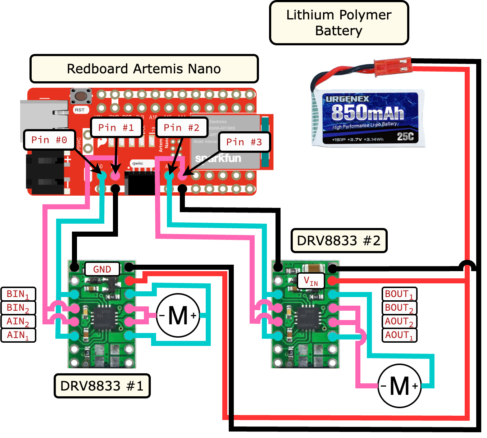

Lab 4: Open-Loop Motor Control
Now that we can get data around us, we can integrate our electronics into our robot, including controlling the wheel-driving motors!
Prelab
For this lab, we expanded on our hardware setup by introducing two DRV8833 motor drivers to control the motors. These connect to an external battery to drive the motors, as well as with PWM inputs (and ground) from the Artemis. Accordingly, I chose analog pins to be able to provide the PWM output (A0 - A3)
{kind=link}

External Battery
Note that the motor drivers/motors are connected to a separate power supply than the other electronics. The relatively high power, fast-switching motor supply will cause EMI ripples in the power supply. To avoid this interfering with our other sensitive electronics (such as out sensors and microcontroller), the power supplies are decoupled.
Motor Drivers - Oscilloscope
To incrementally verify our motor driving capability, I first connected one motor driver to the Artemis. The PWM signals were generated on the motor driver inputs, and the outputs were connected to the oscilloscope probes for measuring, with the motor voltage driven by a voltage supply.
Power Supply
The DRV8833 datasheet notes that the motor voltage can range from 2.7V to 10.8V. However, we will be driving our motors with a 3.7V battery, so I chose to set the voltage supply to 3.7V to be more realistic.
<include setup picture>
The code snippet below demonstrates the PWM functionality by sweeping
the duty cycle of a forward-driving motor, where the IN1 pin is kept
high, and IN2 switches rapidly (inspired by Nila Narayan’s example
from 2024):
#define HIGH_PIN 0 // AIN1 / BIN1
#define PWM_PIN 1 // AIN2 / BIN2
void setup(){
pinMode( HIGH_PIN, OUTPUT );
pinMode( PWM_PIN, OUTPUT );
}
void loop(){
analogWrite( HIGH_PIN, HIGH );
for( int i = 0; i < 255; i = i + 1 ){
analogWrite( PWM_PIN, i );
}
}
Once we verified one motor driver, I soldered the second one to verify it as well; the snippet below similarly sweeps the duty cycle, but increases the duty cycle of the first forward-driving motor while decreasing that of the second reverse motor.
#define MOTOR1_IN1 0
#define MOTOR1_IN2 1
#define MOTOR2_IN1 2
#define MOTOR2_IN2 3
void motor1_forward(uint8_t i) {
analogWrite(MOTOR1_IN1, HIGH);
analogWrite(MOTOR1_IN2, i );
}
void motor2_reverse(uint8_t i) {
analogWrite(MOTOR2_IN1, 255 - i );
analogWrite(MOTOR2_IN2, HIGH);
}
void setup() {
pinMode(MOTOR1_IN1, OUTPUT);
pinMode(MOTOR1_IN2, OUTPUT);
pinMode(MOTOR2_IN1, OUTPUT);
pinMode(MOTOR2_IN2, OUTPUT);
}
void loop() {
for (int i = 0; i < 255; i = i + 1) {
motor1_forward( i );
motor2_reverse( i );
}
}
<include setup picture>